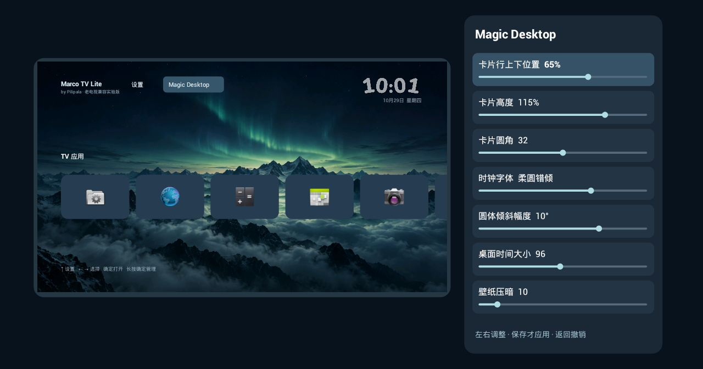

LITE · 0.1.0 · 老电视兼容实验版
老电视，也有新桌面。
Marco TV Lite，由 Pilipala 开发。保留卡片桌面、四款时钟与 Magic Desktop，让老系统先用好基础功能。
目标最低 Android 4.0。已通过 Android 4.0.2 模拟器基础验证，尚无老电视真机验证。更多机型等待实测反馈，欢迎加入测试！
下载 Marco TV Lite 0.1.0
约 4.1 MiB · 2026 年 10 月 29 日 · 独立安装，可与完整版共存。
下载 Lite 实验版 APK 安装与使用说明SHA-256：2ce5a7af7fea727102c715e18335e2fecf651e0a3ec566cdf3269227b5b14d24
本软件免费开源。如果你付费购买了本软件，请尽快向购买平台申请退款。
轻量版，保留这些日常体验
卡片桌面
左右选择、确定打开；长按管理置顶和隐藏。支持最近打开或名称排序，向右移动时整行跟随滚动。
Magic Desktop
平面缩小预览，11 项调整。卡片位置、高度、圆角和时钟外观可调，保存才生效，返回撤销。
四款时钟
现代宽体、修长窄体、柔圆错倾、雅致衬线。圆体倾斜幅度可调，桌面闲置后放大时间、压暗壁纸。
简单维护
两张内置壁纸、本机外观快照和设备状态页。无联网权限，不上传使用数据。

先试用，再决定是否设为桌面
- 在电视「关于／系统信息」核对实际 Android 版本。不能安装 Android APK 的系统不适用。
- 下载上方带 Lite 的 APK。通过电视浏览器、厂商文件接收、U 盘或已经授权的电脑 ADB 传到电视。
- 按系统提示，允许实际打开安装包的文件管理器或浏览器安装未知来源应用，然后安装。
- 从原厂应用列表打开 Marco TV Lite，检查方向键、确定、返回和应用启动。
- 确认基本操作正常后，如果系统提供默认桌面选择，再选择 Lite。不要停用或卸载原厂桌面。
镜像站现有安装助手内置的是完整版，不会自动安装 Lite。Android 4.x 请直接使用本页 Lite APK；是否允许浏览器下载、文件接收或默认桌面选择，由电视固件决定。
遥控器怎么操作
左右选择卡片，确定打开；上键进入顶部设置与 Magic Desktop，下键回到卡片。长按确定打开单应用菜单。Magic Desktop 中上下选项目、左右调数值，滚动到底部选择保存、取消或恢复默认值；恢复默认值也需要再保存。
第一次按键从桌面时钟屏保唤醒，避免误开应用。Lite 的屏保只在桌面前台生效，不接管电视系统屏保。
更新、备份与恢复
Lite 首版没有在线更新，更新时手动覆盖安装 Lite APK。它不接入完整版的稳定／体验更新渠道，设置和备份也不互通。
「保存本机外观备份」只保留外观参数与内置壁纸选择，不包含应用排序记录，也不能迁移到其他电视。卸载 Lite 会删除设置和内部备份。需要恢复原厂桌面时，在系统设置改回默认桌面，或卸载 Lite。
验证到了哪里
18 项本地检查 + 23 项 Android 4.0.2 模拟器运行检查通过。覆盖安装运行、应用发现和打开、方向键、四款字体绘制、预览保存与撤销、本机外观恢复和异常备份保护。
厂商 Home 键、真实遥控器长按／双击、关屏唤醒、长时间运行及实际流畅度仍待真机验证。Android 4.0.3/4.0.4、4.1–5.x 和其他架构未逐项运行验证。
Lite 首版暂不提供 Marco 互联、系统最近任务、媒体播放卡片、ADB 自动恢复和开机接管。完整版继续面向 Android 6.0 及以上；查看完整版功能与下载。
反馈请附电视品牌型号、Android 与固件版本、软件版本、具体操作和结果。截图请遮挡账号、Wi-Fi 名称、IP、序列号和私人应用。